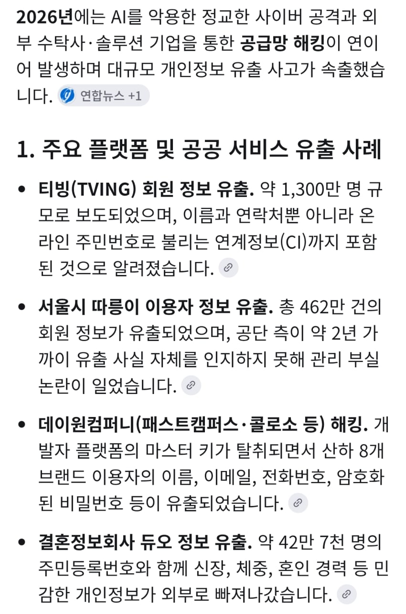
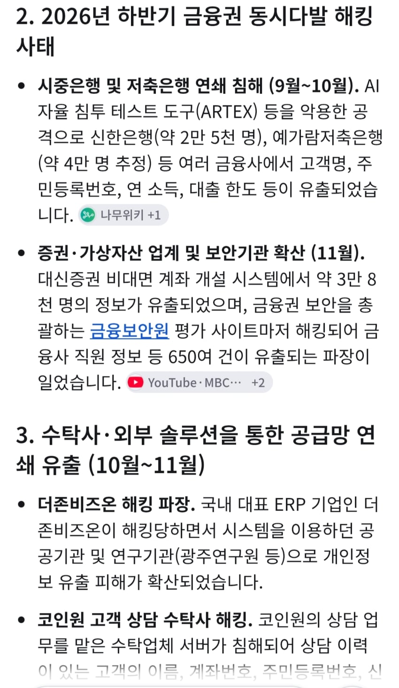
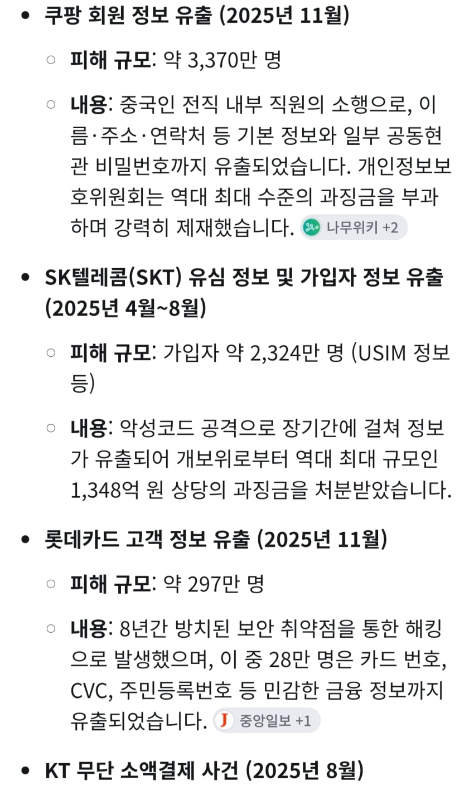
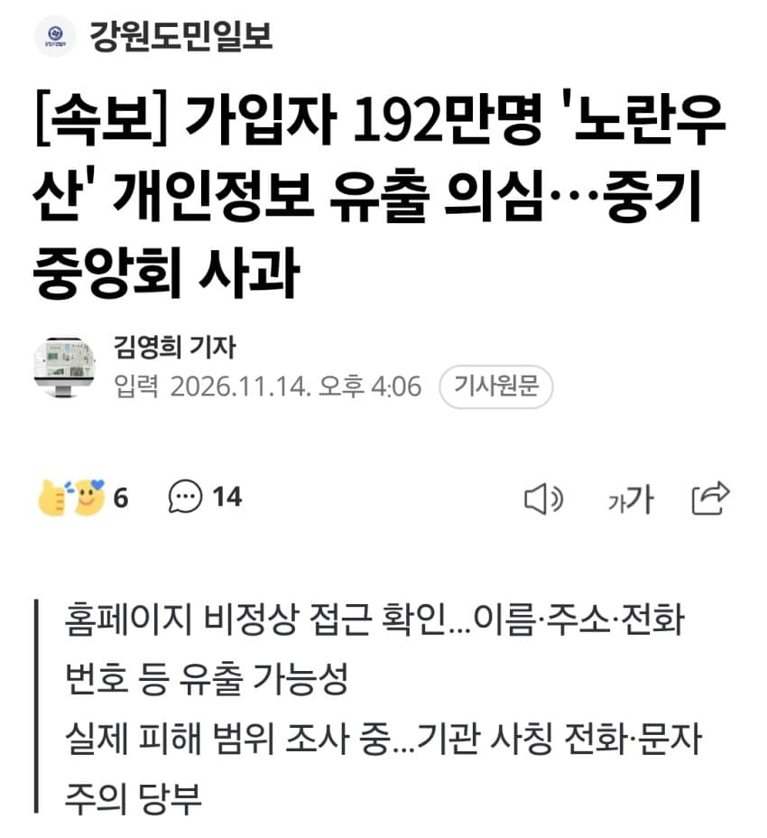
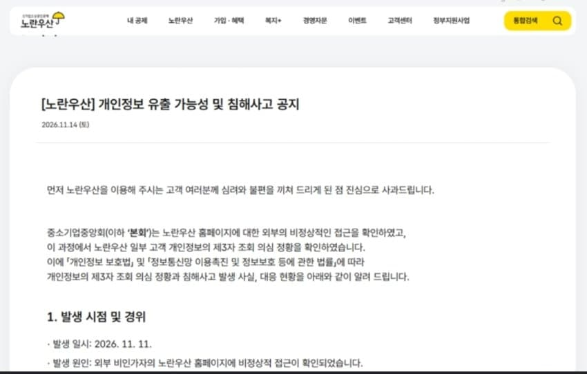
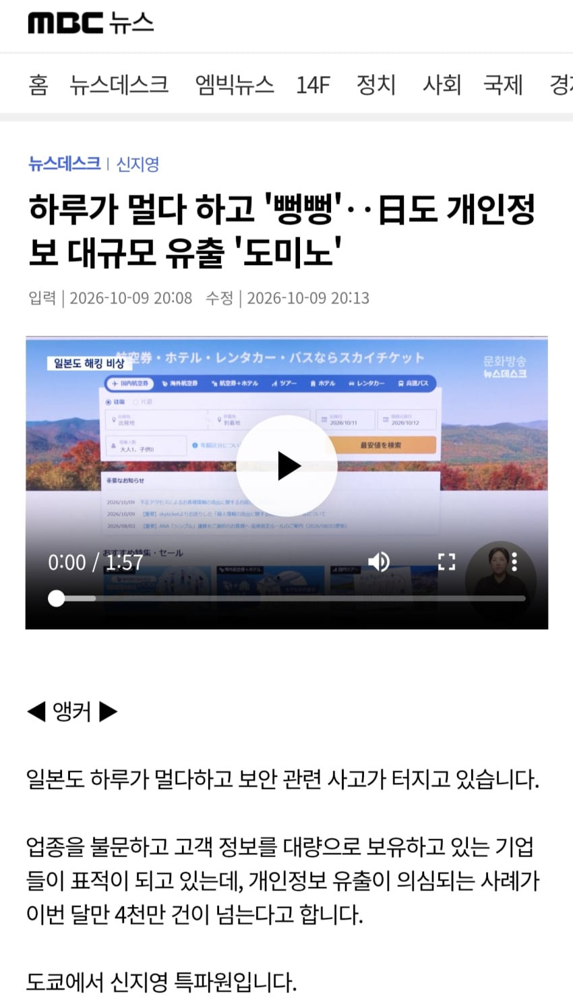
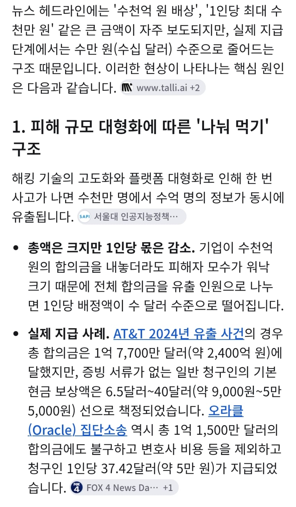

올해만해도 거의 월마다 수백, 수천만명씩 개인정보가 털렸고
작년은 머 말 안해도 알거임..

이젠 내 주민번호는 걍 전세계 공공재라고 생각하면 될 듯 ㅋㅋㅋ..
민간기업 뿐만 아니라 정부기관도 털리니..


아날(로그)의 나라 일본마저 한국보다 더 하면 더 했지, 안 딸릴 정도로 공공재가 되었다함

미국처럼 배상금 수백 수천억씩 물게하자는 것도 큰 의미없는게,
(이미 한국도 요새 그 정도로 물게 하고 있음)
미국도 안 털린 곳 찾기 힘들 정도로 개인정보가 수시로 털리지만

너무 한꺼번에 털리다보니 정작 인당 받는 배상금은 몇천원, 몇만원 수준이라함
(한국도 마찬가지..)
문제는 일부러 뚫리고 싶어서 뚫리는 것도 아니고, AI로 뚫리는거 속수무책임
최근 덴마크만해도 정부 CPR(중앙인구등록 데이터)가 털리면서 거의 모든 덴마크인들의 정보가 털림 ㅋㅋㅋ

최근 또 세계 1위 코인화폐거래소가 몇조원 털리는 것만 봐도 ㄹㅇ..
걍 이쯤되면 AI를 혐오지성으로 분류해야할 듯
댓글
수집 당시 댓글 82개
기뮤식의뜨끈한김치왕만두방귀 · 11.15 20:30:14
· ㅇㅇ · 11.20 07:25:42
· ㅇㅇ · 11.20 08:01:44
코알라코끼리 · 11.15 20:30:37
· ㅇㅇ · 11.15 20:32:24
ㅇㅇ · 11.15 20:32:05
ㅇㅇ · 11.15 20:32:27
· ㅇㅇ · 11.20 07:10:10
· ㅇㅇ · 11.20 07:25:54
· ㅇㅇ · 11.20 07:26:09
ㅇㅇ · 11.15 20:33:18
ㅇㅇ · 11.15 20:33:51
ㅇㅇ · 11.15 20:40:26
ㅇㅇ · 11.20 07:01:19
ㅇㅇ · 11.20 07:02:50
ㅇㅇ · 11.20 07:03:00
· ㅇㅇ · 11.20 07:03:05
ㅇㅇ · 11.20 07:04:11
크리스티아노 · 11.20 07:05:02
· 파도. · 11.20 07:06:35
ㅇㅇ · 11.20 07:06:01
· ㅇㅇ · 11.20 07:09:21
· ㅇㅇ · 11.20 07:12:57
파도. · 11.20 07:06:29
· 크리스티아노 · 11.20 07:06:52
· 애기연지벌레 · 11.20 07:41:40
· 파도. · 11.20 07:56:40
ㅇㅇ · 11.20 07:10:15
ㅇㅇ · 11.20 07:10:44
니네엄빠
후장내시경
도 다털림
어차피
ㅇㅇ · 11.20 07:11:18
ㅇㅇ · 11.20 07:11:50
· ㅇㅇ · 11.20 07:15:34
파라오의분뇨 · 11.20 07:13:23
ㅇㅇ · 11.20 07:13:45
ㅇㅇ · 11.20 07:16:47
· ㅇㅇ · 11.20 07:17:13
맥락 · 11.20 07:17:16
ㅇㅇ · 11.20 07:18:59
ㅇㅇ · 11.20 07:19:57
히이잉 · 11.20 07:22:38
· ㅇㅇ · 11.20 07:23:56
1111 · 11.20 07:23:30
ㅇㅇ · 11.20 07:24:21
ㅇㅇ · 11.20 07:25:06
· ㅇㅇ · 11.20 07:25:18
ㅇㅇ · 11.20 07:29:03
ㅇㅇ · 11.20 07:29:41
ㅇㅇ · 11.20 07:32:26
ㅇㅇ · 11.20 07:39:15
씹덕1021일차 · 11.20 07:50:24
히이잉 · 11.20 07:53:50
ㅇㅇ · 11.20 08:01:23
· ㅇㅇ · 11.20 08:20:06
· ㅇㅇ · 11.20 10:36:12
ㅇㅇ · 11.20 08:02:02
히이잉 · 11.20 08:03:12
ㅇㅇ · 11.20 08:03:56
파치카 · 11.20 08:05:09
ㅇㅇ · 11.20 08:05:34
원또 · 11.20 08:28:59
ㅇㅇ · 11.20 08:31:18
ㅇㅇ · 11.20 08:33:26
ㅇㅇ · 11.20 08:33:28
ㅇㅇ · 11.20 08:37:45
ㅇㅇ · 11.20 08:38:23
· ㅇㅇ · 11.20 08:38:32
· ㅇㅇ · 11.20 08:39:41
ㅇㅇ · 11.20 08:46:12
· ㅇㅇ · 11.20 10:35:26
ㅇㅇ · 11.20 08:47:29
ㅇㅇ · 11.20 09:17:36
ㅇㅇ · 11.20 09:25:47
ㅇㅇ · 11.20 09:27:50
ㅇㅇ · 11.20 09:32:58
· ㅇㅇ · 11.20 09:33:47
ㅇㅇ · 11.20 09:35:23
ㅇㅇ · 11.20 09:47:25
ㅇㅇ · 11.20 09:58:16
ㅇㅇ · 11.20 10:23:06
· ㅇㅇ · 11.20 11:26:38
· ㅇㅇ · 11.20 11:29:20
ㅇㅇ · 11.20 10:34:56